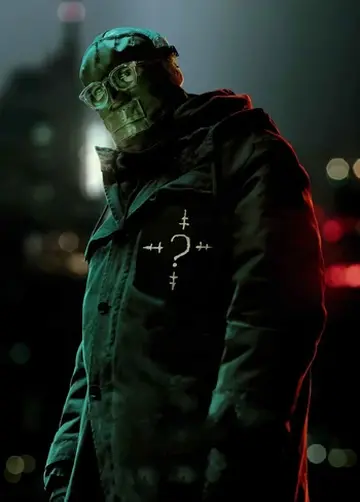

Ameaça Nível Intelectual: O Charada
Nome Real: Edward Nygma (Edward Nashton)

Perfil Psicológico Operacional
Narcisista patológico movido por um complexo de superioridade. É fisicamente fraco, mas compensa com um QI de nível genial. Incapaz de cometer um crime sem deixar um rasto propositado de enigmas para provar que é mais inteligente que o Batman e a Polícia.
Progresso da Decifração atual (GCPD): 15% (Falha iminente).
Nível de Periculosidade Física:
Motivação: Dinheiro ou poder político Guerra psicológica e humilhação intelectual.
> Padrões de Assinatura
- Pistas escritas em cifras criptográficas complexas.
- Armadilhas mortais baseadas em jogos de lógica e xadrez.
- Uso de bengalas modificadas com dispositivos de hacking.
"Riddle me this, Batman: O que pertence a ti, mas os outros usam mais do que tu?"
Transmissão pirata nos ecrãs de Gotham